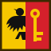

Slop Genève is built from open government data and OpenStreetMap. It is an unofficial project, not affiliated with swisstopo, the State of Geneva or the City of Geneva.
Code under the MIT License, after colorfield's Slop Zürich and mrdoob's Slop New York. Built with three.js (MIT).
Drag to look · Pinch to zoom
You are at the Pont du Mont-Blanc